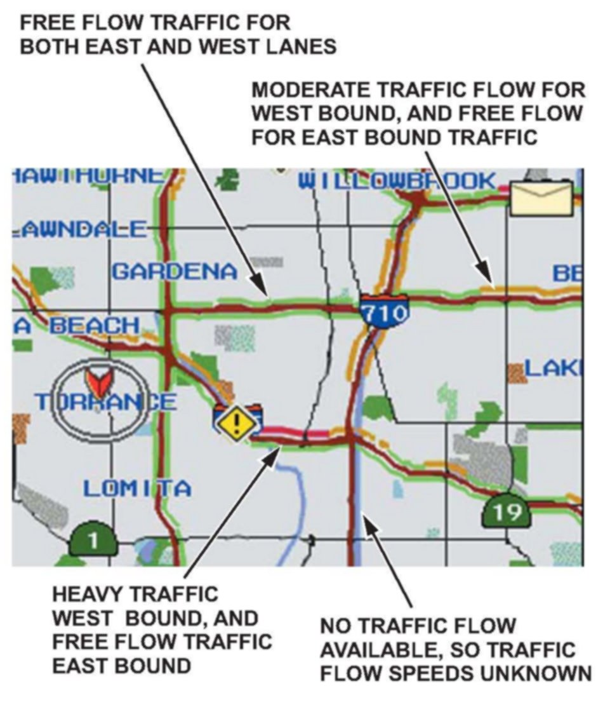
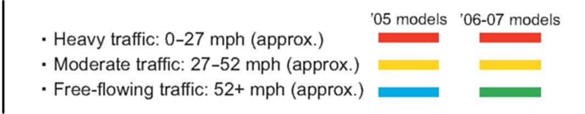
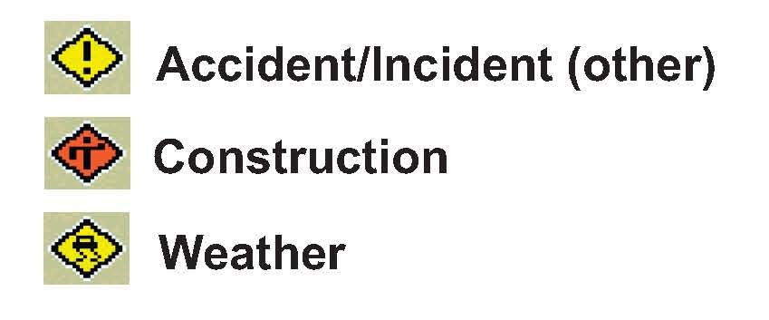
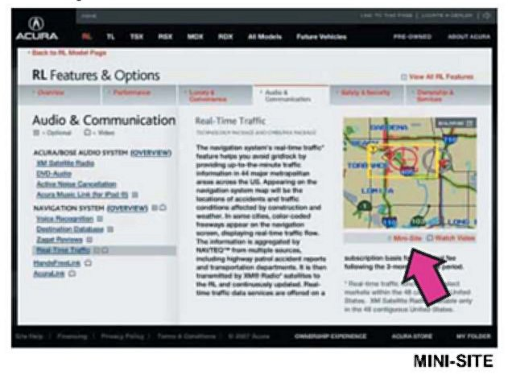
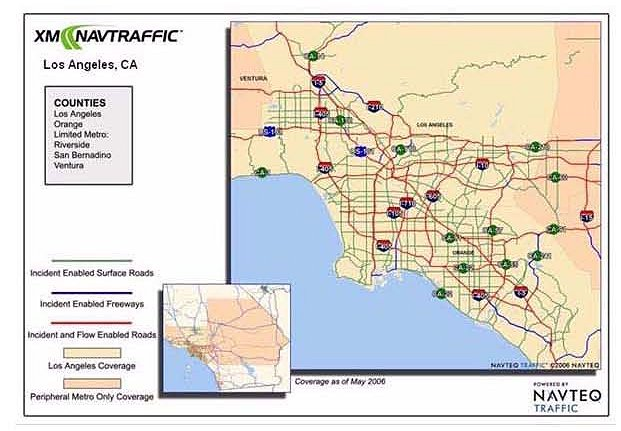
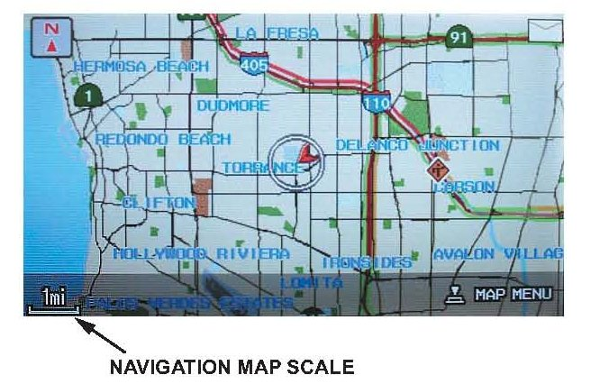

Navigation System - No Real Time Traffic Info. Displayed
05-026May 12, 2007
Applies To:
2005-07 RL - ALL Equipped with Real-Time Traffic 2007 RDX, MDX and TL - ALL Equipped with Real-Time Traffic
No Real-Time Traffic on the Display
(Supersedes 05-026, dated February 7, 2007 to update the information marked by asterisks)
BACKGROUND
This service bulletin provides this information:
^ Overview of the map traffic display
^ Finding out what traffic data is available in your area
^ Troubleshooting for the symptom ~No traffic shown"
OVERVIEW OF THE MAP TRAFFIC DISPLAY
The real-time traffic feature has the capability of showing this information:
^ Traffic flow rates (as colored bands beside the road)
^ Accident incident icons
^ Construction incident icons
^ Weather-related incident icons
Always verify what features are available in your area. Many areas provide only incident icons and no traffic flow rates. If the traffic flow rate is not available in your area, and/or there is a temporary lack of incident icons, a client may believe that the system is not working properly.
NOTE:
Real-time traffic information may experience outages, be down for maintenance, or only be available during certain times of the day. It is important to confirm that real-time traffic works on a known-good vehicle before diagnosing the client's vehicle.

Above is a screen capture of real-time traffic in the Los Angeles area that shows traffic flow and accident incident icons.

Color bands indicate how fast the traffic is moving:

Incident icons indicate accidents, construction, or weather-related incidents:
FINDING OUT WHAT REAL-TIME TRAFFIC DATA IS AVAILABLE IN YOUR AREA

Before you can troubleshoot real-time traffic, you need to know what coverage is available in your area. To see what traffic data is available in your area, go to select the Mini-Site icon (see red arrow below), then select Coverage Areas.
Selecting a city brings up a map that shows what roads and freeways are incident enabled, and what roads and freeways are incident and traffic flow enabled for that area.

Above is an example of the Los Angeles area that illustrates the coverage details.
Check the website regularly for additional cities and updated coverage details. Encourage your client to visit the website regularly as well.
TROUBLESHOOTING - NO REAL-TIME TRAFFIC IS DISPLAYED
*NOTE:
^ A marginal battery or a poorly performing charging system may cause the AcuraLink control unit (XM receiver) to malfunction. Resolve all battery and/or charging system issues before beginning troubleshooting.
^ The RL, MDX, and TL models are equipped with an auto start feature that keeps the starter motor engaged, even when you release the ignition switch. Due to the ignition switch design, if a client releases the ignition switch before the engine starts, the AcuraLink control unit (XM receiver) may receive unusually low voltage, which may cause the AcuraLink control unit (XM receiver) to malfunction. When starting the engine, hold the ignition switch in the START (Ill) position until it starts.
1. Check the battery condition. Refer to Service Bulletin 88-016, Battery Test Procedure.
Is the battery in good condition?
Yes - Go to step 2.
No - Troubleshoot the battery and/or charging system and recheck.
2. Park the vehicle outside where you have a clear view of the southern sky.
3. Turn the ignition switch to LOCK (0).*
4. Check the real-time traffic display of a known-good vehicle to make sure that the XM� NavTraffic is being broadcast in your area. You may have to wait 5 minutes for the traffic display to refresh.
Is real-time traffic shown on the map of the known- good vehicle?
Yes - Go to step 5.
No - Call Acura Client Services at (800) 382-2238, and check to see if there are any traffic system outages or blackouts in your area.
NOTE:
Some cities feature incident icons only. A temporary lack of incident icons may give the impression that the system is not working properly.
5. Make sure the client's XM NavTraffic account status is active. This account is separate from the regular XM radio subscription, and it has a separate fee. For the 2007 RL, RDX, MDX and IL, real-time traffic is free for the first 3 months. For 2005-06 RL vehicles, real-time traffic was free for the first 12 months.
To check the XM NavTraffic account status:
^ Call XM(R) Satellite Radio at (800) 852-9696.
^ Make sure you have:
- The VIN
- The XM Radio ID (shown on channel 000)
^ From the automated phone menu, select tech support.
^ Tell the agent that you are working on an Acura vehicle, and ask them to check the XM NavTraffic account status. Have the agent confirm that the XM NavTraffic subscription applies to the vehicle VIN you are working on.
NOTE:
A client may own more than one vehicle capable of displaying real-time traffic.
Is the XM NavTraffic account status active? Yes - Go to step 6.
No - If the free trial period is expired, return the vehicle to the client, and inform them how to renew their XM NavTraffic subscription by calling XM Radio at (800) 852-9696.
If the free trial period has not expired, call XM Radio at (800) 852-9696 and reactivate the account for the remainder of the free trial period, then request a rapid refresh. To do a rapid refresh:
- Park the vehicle outside, in a clear area, with the engine running.
- Turn the audio system on, and tune to an XM radio channel.
- Wait 30 minutes.
If the vehicle now receives real-time traffic information, return it to the client, otherwise go to step 6.
6. Do a VIN status inquiry to see if the vehicle has any outstanding product updates or service bulletins related to either replacing the AcuraLink control unit (2005 RL only) or updating the AcuraLink unit software (2006-07 RL, 2007 MDX, RDX, TL).
Are there any applicable product updates or service bulletins?
Yes - Do the applicable product updates and service bulletins, then retest the vehicle. If real-time traffic still does not work, go to step 7.
No - Go to step 7.
7. Verify that you are receiving a signal from XM:
^ Park the vehicle outside with a clear view of the southern sky.
^ Turn on the audio system, and tune to XM channels 000,001,174, or 247.
Can you tune to XM channels 000, 001, 174, or 247?
Yes - Go to step 8.
No - Refer to the applicable service manual, troubleshoot the XM radio, and retest. If real-time traffic still does not work, go to step 8.

8. Make sure the navigation map is set to either the 1/2, 1, 2, or 5 mile scale. If the scale is not set to one of these values, rotate the interface dial knob, or use the zoom in/zoom out buttons to adjust the map to proper scale.
Do you see real-time traffic on the navigation display?
Yes - Return the vehicle to the client, and explain the proper settings.
No - Go to step 9.
9. Make sure the real-time traffic settings are correct. MDX, RDX, and RL:
^ Press the map/guide button, then select map menu by pressing in the selector button.
^ Select Show Icon on Map by turning the interface dial, then pressing in the selector button.
^ Select the Traffic icon from the icon selection bar at the bottom of the navigation display. The icon should turn solid blue when you select it. If it does not, go to step 10.
^ Select icon options by pushing the selector to the right.
^ From the Select category for icon settings menu, select Traffic.
^ Select traffic speeds by pressing in the selector on the Select Traffic info screen. It should turn solid blue. Turn the interface dial to select Traffic icons, and press in the selector again. Both Traffic speeds and Traffic Icons must be solid blue. Push the selector to the right (DONE) to complete the process.
TL:
^ Select the icon button on the lower left hand corner of the map screen.
^ Select the Traffic icon. The icon should turn solid blue. If it does not, go to step 10.
^ Select the Icon Options button.
^ Select Traffic from the Select category for icon settings screen.
^ Select both Traffic speeds and Traffic Icons from the Select traffic info screen. Both icons must be solid blue and indicate On Map before checking real-time traffic.
^ Select Done to exit and return to the map. Do you see real-time traffic on the navigation display?
Yes - Return the vehicle to the client, and explain the proper settings.
No-Go to step 10.
10. Do the diagnostic mode checks:
^ Start the vehicle, and enter the navigation diagnostic mode by pressing and holding the Menu, Map/Guide, and Cancel buttons.
^ Select Navi System from the Navigation Diagnosis Items menu, and verify that all the links/icons are green. If any links/icons are red refer to the applicable service manual for repair information, then go to step 11.
^ Return to the main Navigation Diagnosis Items menu and select XM(HIP), then select XM(HIP) System Link, and verify that the links/icons are green. If any links/icons are red, refer to the applicable service manual for repair information, then go to step 11.
11. Confirm the Traffic Channel settings of the AcuraLink unit (2007 MDX, RDX, TL).
^ Return to the XM(HIP) diagnostic menu.
^ Select XM(HIP) ECU.
^ Select Traffic channel.
NOTE:
Do not touch or select Data Reset.
^ Confirm the settings:
- SID = 255
- APP ID = 8
NOTE:
Clients may accidently change these internal settings. If the setting have been changed, the real-time traffic may not operate.
^ Adjust the setting(s), if necessary. Press the cancel button twice to return to the XM(HIP) diagnostic menu. Select the on-screen Return button to fully exit the diagnostic mode.
^ Turn the vehicle off. Wait 20 seconds, and start the engine.
^ Park the vehicle outside with a clear view of the southern sky, and verify you are receiving an XM radio signal (see step 7).
Do you see real-time traffic on the display?
Yes - Return the vehicle to the client.
No - Go to step 12.
12. Reset the AcuraLink control unit:
^ Make sure you have the anti-theft codes for the audio and navigation system.
^ Turn the ignition switch to LOCK (0), then pull the back-up fuse from the underhood fuse/relay box. For the underhood fuse/relay box location, refer to the applicable service manual. Wait 2 minutes, then reinstall the fuse.
^ Start the engine.
^ Enter the anti-theft codes for the audio and navigation system.
^ Let the navigation system reboot, then select one of the traffic scales (1/2, 1, 2, 5 miles).
^ Park the vehicle outside, with a clear view of the southern sky, then verify you are receiving an XM radio signal (see step 7).
Do you see real-time traffic on the navigation display?
Yes - Return the vehicle to the client. No - Go to step 13.
13. Substitute a known-good AcuraLink control unit, and retest the vehicle.
Park the vehicle outside, with a clear view of the southern sky, and verify you are receiving an XM radio signal (see step 7).
Do you see real-time traffic on the navigation display?
Yes - Replace the original AcuraLink control unit. Refer to the applicable service manual. Register the new AcuraLink control unit with XM radio and Acura Client Services. Return the vehicle to the client.
No - Substitute a known-good navigation control unit. If the problem goes away, replace the original navigation control unit.